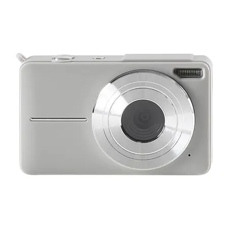

If you ever walked into a five below and head to the tech section, You have probably came across these cameras
There are only two color options for this camera, A grey color and a pink color.


The camera includes:
The Mini Digital Camera has a 0.3 Megapixel VGA sensor that can be inerpolated into 40 Megapixels under the settings option.
if there is one thing you can expect from cheap digital cameras is that the camera/video quality won't be as good as using your smartphone for photos. You are given an option to "interpolate the image quality to 40 Megapixels; However it does not affect image quality". You also have an option to iake photos with custom filters and stickers is a fun concept.
The camera doesn't take high quality photos but if you are someone that likes having vintage looking photos as many people on social media are with their obsessions with "Y2K 2000s Aesthatic" or rather just for the novelty of owning a digital camera, then getting this camera could be an option. However if you simply want a good digital camera then maybe this $15 Five Below Mini Digital Camera might not be the best option for you.
When inserting the SD Card onto your computer, it would automatically add three folders, 1 for Photos, 1 for Videos, and then there is one for an MP3 which indicates that this camera could also function like an MP3 player, Unfortunetly, There is no way to play MP3 files on this camera but it is most likely that several variations like the ones sold on TEMU, Aliexpress, or even TikTok Shop might have that function.
Return to home page